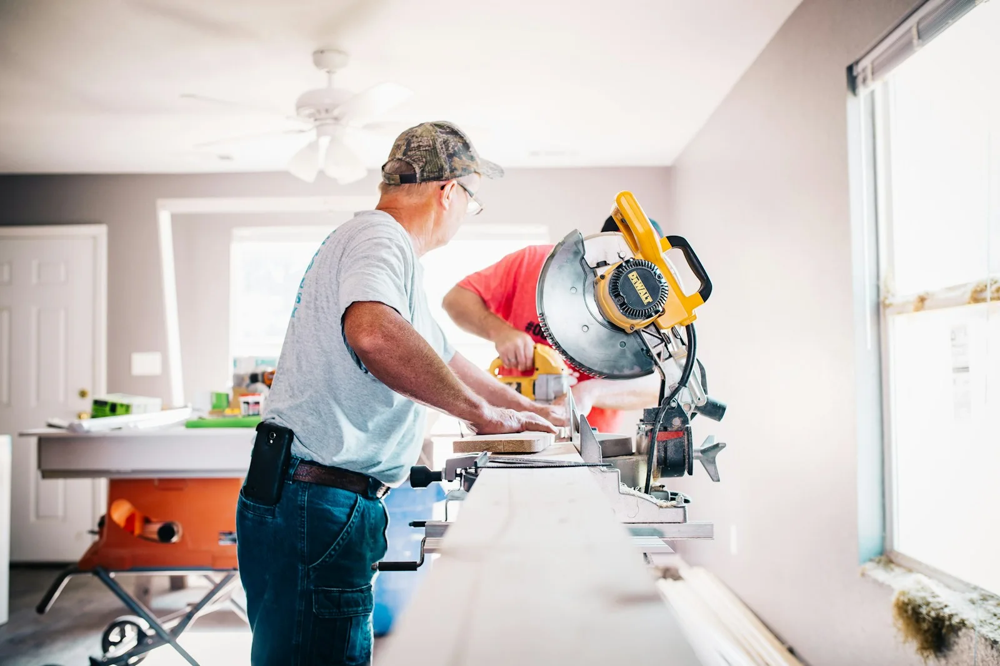
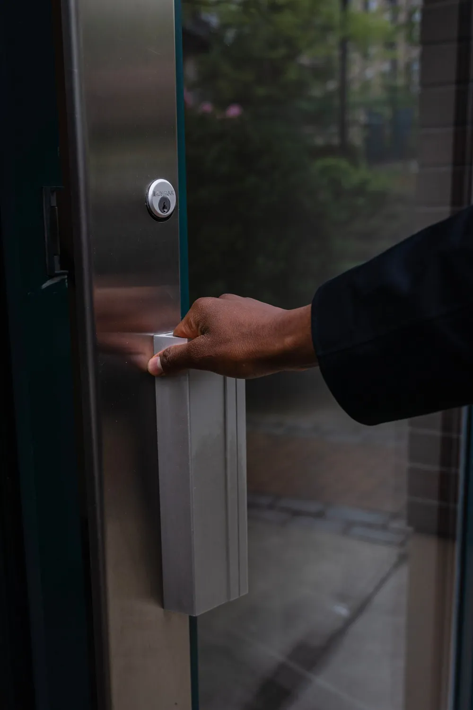
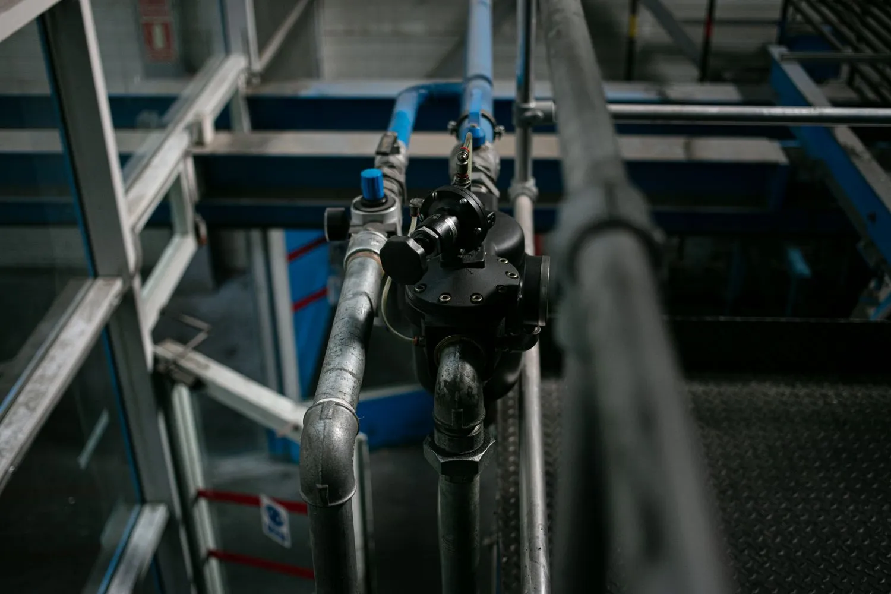

Evaluación de la Propiedad
Evaluamos el edificio, identificamos las prioridades de mantenimiento y conocemos sus necesidades particulares.
CUIDADO PLANIFICADO. UNA RELACIÓN CONTINUA.
Mantenimiento continuo y confiable para propiedades residenciales y comerciales.
Ayudamos a propietarios y administradores a mantener sus edificios en buen funcionamiento mediante mantenimiento programado, inspecciones preventivas, reparaciones y acuerdos de servicio continuo.
MANTENIMIENTO CONTINUO DE EDIFICIOS
En lugar de buscar un contratista distinto ante cada problema, cuente con NextPro como su aliado continuo para el mantenimiento habitual, las inspecciones y las reparaciones.
Cuando se reporta un problema cubierto por el acuerdo, evaluamos la situación, coordinamos el trabajo necesario y buscamos restablecer el sistema o área afectada de manera eficiente.
Su acuerdo define qué está incluido. Los servicios, la frecuencia y las condiciones de respuesta se adaptan al edificio; los trabajos fuera del alcance se revisan por separado.
CÓMO FUNCIONA
Evaluamos el edificio, identificamos las prioridades de mantenimiento y conocemos sus necesidades particulares.
Definimos los servicios, el calendario de inspecciones, la frecuencia y el alcance del trabajo.
Las inspecciones y el mantenimiento programados ayudan a detectar problemas visibles antes de que requieran reparaciones mayores.
Cuando surge un problema, el administrador tiene un solo contacto para coordinar y realizar el trabajo necesario dentro del alcance acordado.
SERVICIOS DE MANTENIMIENTO DE EDIFICIOS
Seleccione los servicios que necesita su propiedad. El acuerdo final establece los trabajos incluidos y sus exclusiones.

01 / NEXTPRO
Cuidado periódico de los accesorios y conexiones esenciales de su edificio.

02 / NEXTPRO
Atención al desgaste cotidiano de espacios ocupados y zonas compartidas.
03 / NEXTPRO
Las revisiones periódicas ayudan a detectar problemas visibles y organizar las acciones necesarias.

04 / NEXTPRO
Mantenga los baños privados y compartidos dentro de un programa de cuidado constante.

05 / NEXTPRO
Cuidado de accesorios de uso frecuente, plomería accesible y espacios de servicio.

06 / NEXTPRO
Los ajustes oportunos ayudan a mantener el funcionamiento de puertas y herrajes.
07 / NEXTPRO
Un enfoque coordinado para los espacios que comparten ocupantes y visitantes.

08 / NEXTPRO
Los clientes con un acuerdo cuentan con un contacto para reportar problemas. Evaluamos la situación y coordinamos el trabajo según el alcance, la disponibilidad y las condiciones de respuesta acordadas.
MANTENIMIENTO PREVENTIVO
Las inspecciones periódicas buscan fugas, desgaste y deterioro visibles para priorizar las reparaciones a tiempo. Estos ejemplos muestran cómo puede evolucionar un problema sin atender; no significa que ocurrirá en todas las propiedades.
PENSADO PARA PROPIETARIOS Y ADMINISTRADORES
Desde edificios de apartamentos y multifamiliares hasta pequeñas propiedades comerciales, coordine el mantenimiento recurrente mediante una sola relación de servicio.
ACUERDOS DE MANTENIMIENTO A MEDIDA
Los acuerdos se adaptan a los sistemas, prioridades y necesidades de la propiedad. El precio y el alcance se establecen después de la evaluación.
EJEMPLOS DE FRECUENCIA
Solicite una evaluación de su propiedad para recibir una propuesta de mantenimiento personalizada.
PLANIFIQUEMOS EL CUIDADO DE SU PROPIEDAD
Cuéntenos sobre el edificio y el apoyo que necesita. Revisaremos sus prioridades para conversar sobre una propuesta con un alcance definido.
(239) 333-7935Nueva York • Nueva Jersey
Staten Island • Long Island
Enviar una consulta no confirma un acuerdo de servicio ni un tiempo de respuesta. Estos detalles se establecen en su plan de mantenimiento.
Complete el formulario para preparar un mensaje de WhatsApp. Revíselo y envíelo desde WhatsApp.